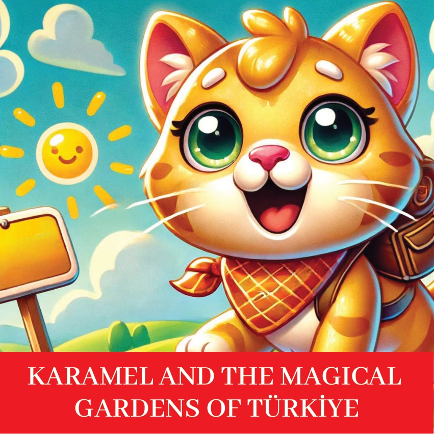
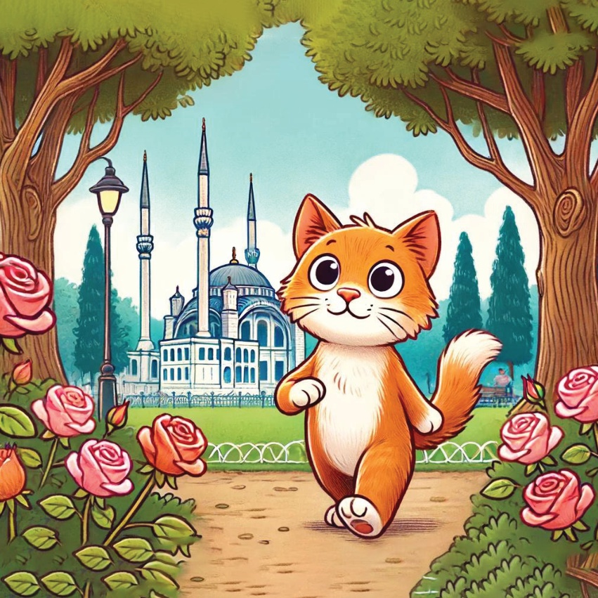
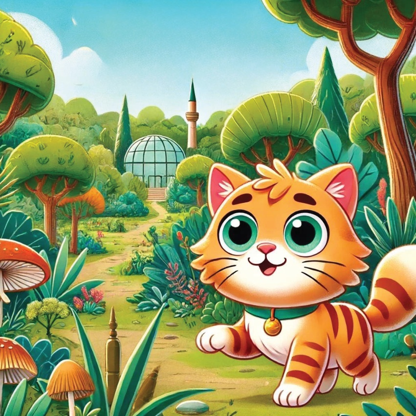
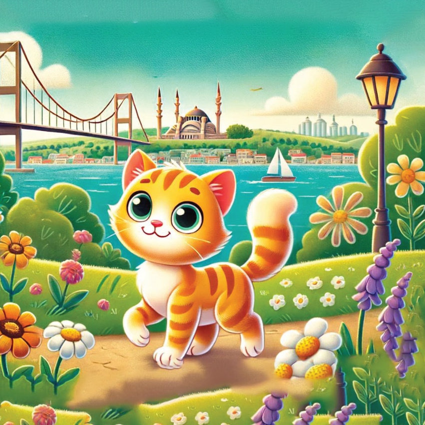
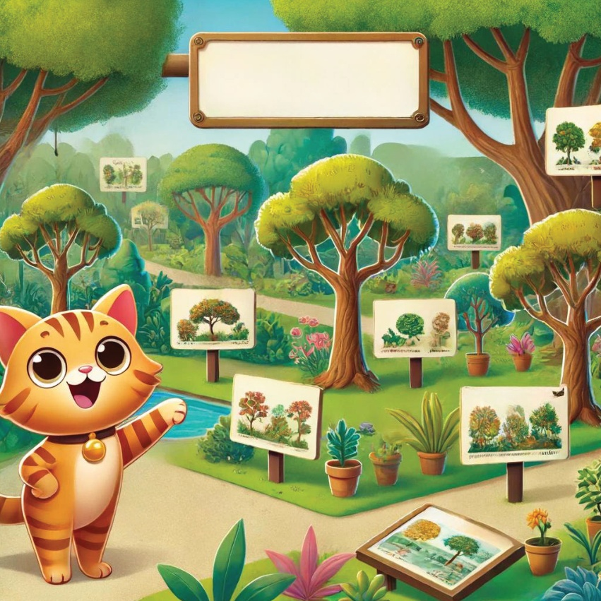
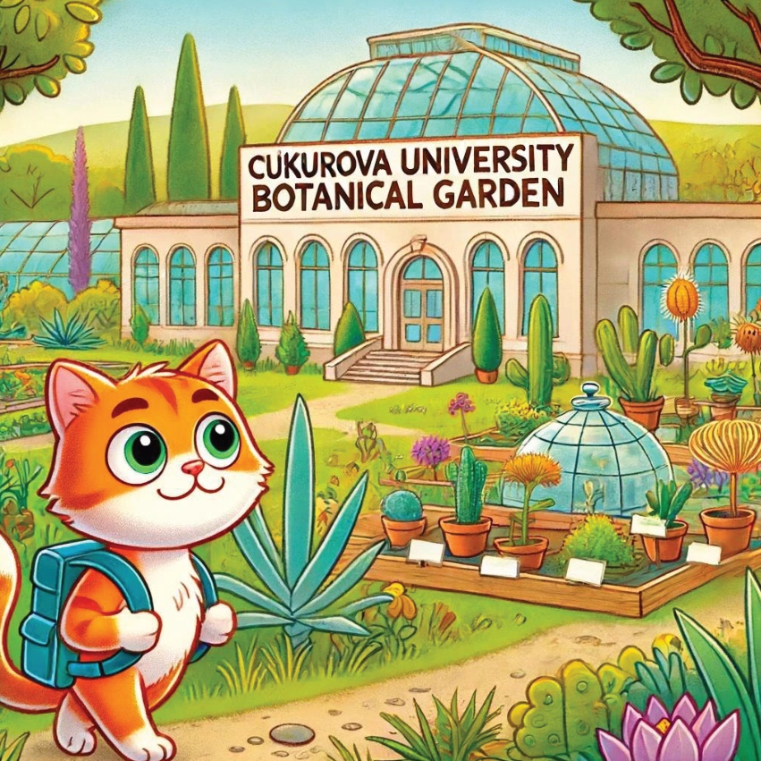
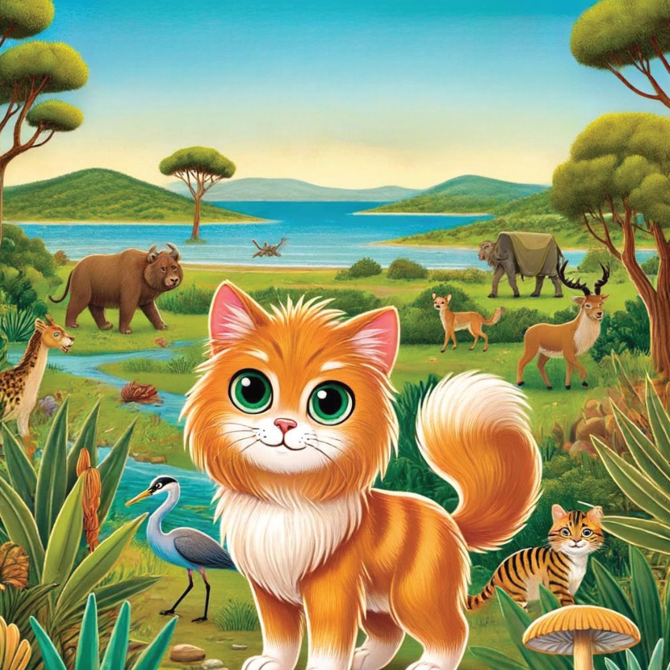
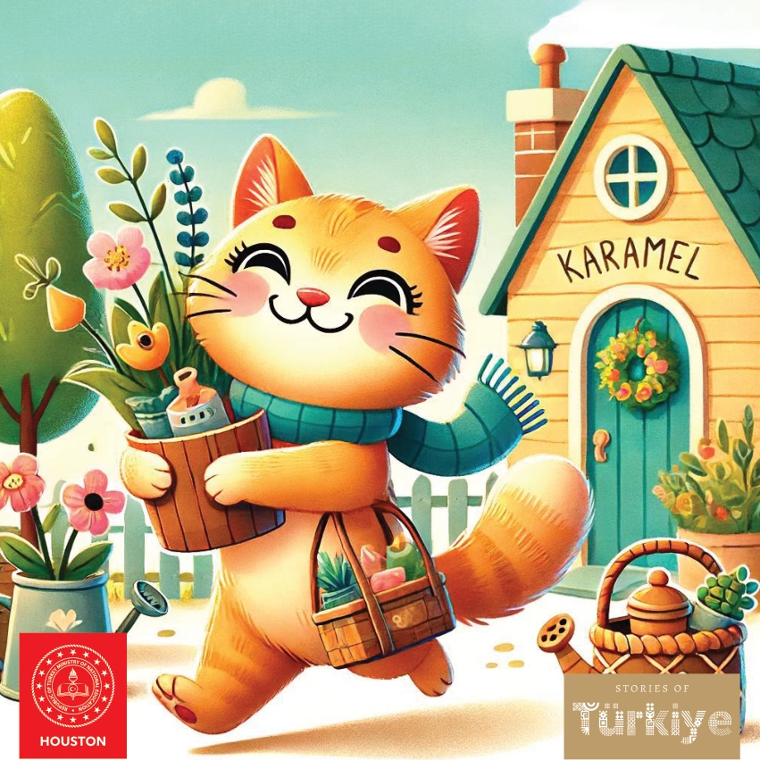

1

2

3
Карамельчик деген сөөкчөдөн кийги, Туркиянын козголуп кеткен жана магиялуу гүлбакчаларын көрүүгө тигилди. Ал өлкөнүн ар кандай белгилүү гүлбакчаларын барып көрүп, андагы жарым чынできるようларды жана тарыхты билүүгө чечти. Өзүнүн жанында чоң кулкуну менен ал жаңы саясатка чыкты.
4
5
Гюльхане Парк - Стамбул. Karamel ilk dəfə Стамбул şəhərindəki Гюльхане Parkına gldi. O gözəl gül çitəklərinə və köhnə ağaclara bañılıb, şəhərin ən qədim parklarından birinin sakit hava şəraitindən həzzлади.
6

7
Ататүрк Арборетуму – Стамбул..
Кərəмел андан соң Стамбулдагы Ататүрк Арборетумуна башты. Ал көптөгөн даımlar менен жарым чынжырларды карап чыкты жана табиятты коргоонун маанилүүлүгү тууралуу билди.
8

9
Emirgan Парк – Стамбул.
Emirgan Паркүндө Карамель жыл сайын өткөн түлкү гүл фестивалында көп түсгүү түлкүлөрдөн бу𝚝 эсти. Ал керемет көрүнүшүп жайгаштырылган гүл бакчаларын жана жарык түсүн байкап жатты.
10
11
Yıldız Park – Стамбул Карамел Yıldız Park’ка башты. Yıldız Park böyüdүү тарихи парк, чүнчөк гүлжөндөрү жана Босфордун поэялуу көрүнүшү бар. Ал парктын жашоочуларынын арасынан эпки башы менен жүрүп, түрдүү өсүмдүктөрдү жана гүлөрдү көрүп жатты.
12

13
Karaca Ботаника Садасы - Йалава.
Йалава шаарында Карака Ботаника Садасы бар. Бул салада дүйнөнүн ар кандай өлкөлөрүнөн көптөгөн жашыл отурдуктар жана ағачтар бар. Карака бул салада таза эмес жана өзгөрүп тургай эскилүү жаныбарларды коргоого жасалган иштер тууралуу билди.
14

15
Çukurova Universiteit Ботаника Садасы - Адана.
Адана шаарында Карамель Çukurova Universiteit Ботаника Садасына башты. Бул көптөгөн түрдүү чачолоқтардын өсүүчүлөрү бар иликтөө садасы. Ал даярдоо иштери тууралуу жана чачолоқтарды коргоонун маанилүүлүгү тууралуу билди.
16

17
Dilek Yarım தீப தீப தீப தேசிய பூங்கா - Aydın.
Sonunda Karamel Aydın'daki Dilek Yarımதீப தீப தீப தேசிய பூங்காவını keşfetti. O parkın doğal güzelliğine çok hayran kaldı. Parkta çok çeşitli bitki ve hayvanlar vardı.
18

19
Karamel көңүлү гүндеи кереметillä толлуп, Туркиянын сый 만나га туруктуу гүлкелүү далаларынан үйүнө кайтып келди. Ал бул далалар табияттин кооздугуна жана ар кандай түрлүү өсүмдいきлериндеги чукулуктун намуздуу кубарышы экенин түшүндү.
20
21

22